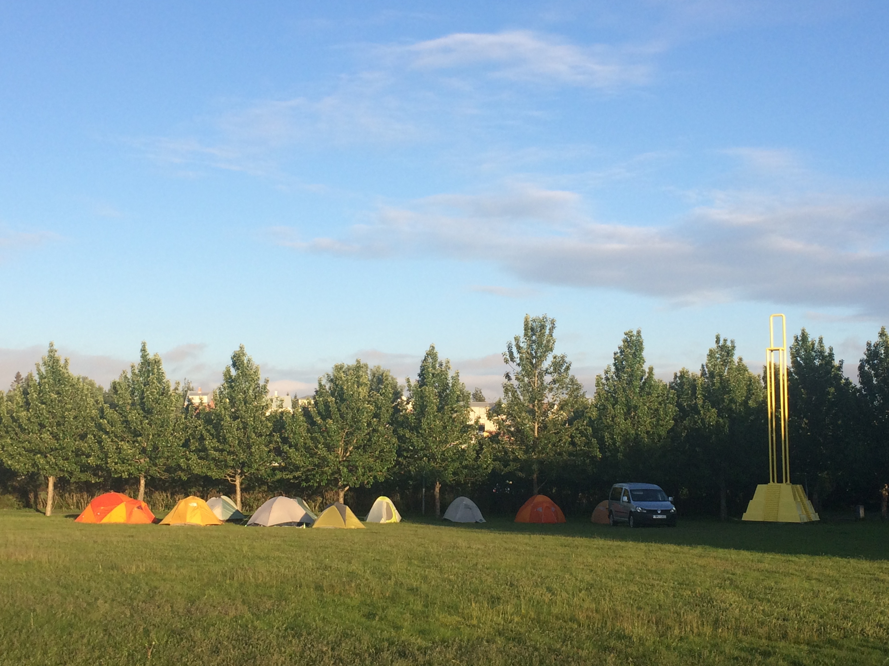
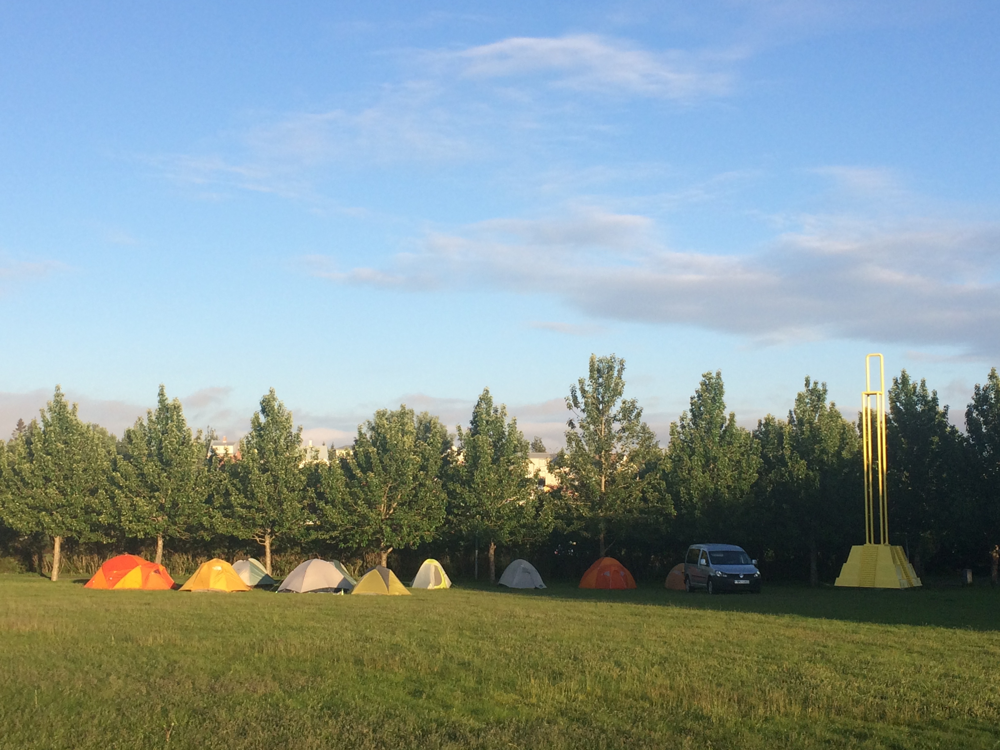
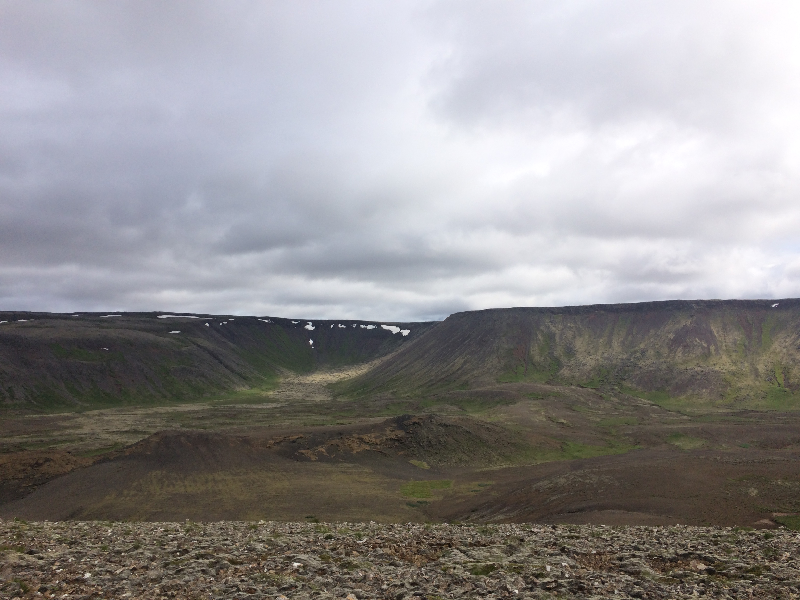
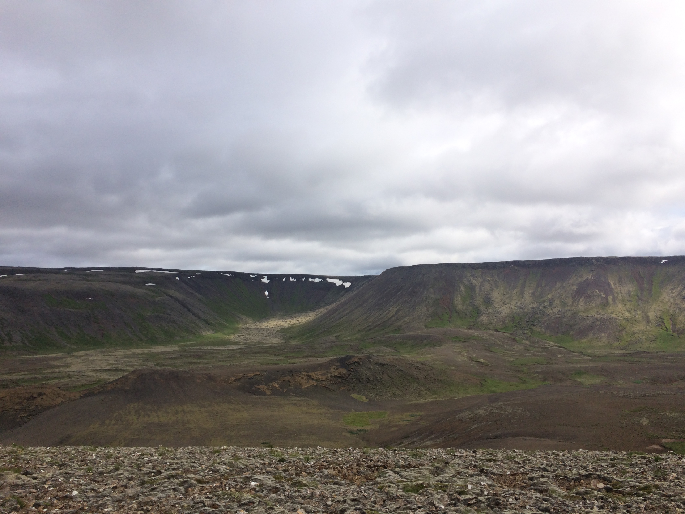

During my senior year at Carleton College, I had the great opportunity to participate in a Keck Geology Consortium project, which is designed to provide research experiences to undergraduate students from the 18 participating colleges and universities. I joined a project lead by Megan Pollock and Ben Edwards that involved two weeks of fieldwork in Iceland, two weeks of labwork at Wooster College, presenting posters at the GSA national fall meeting, completing a thesis in the following year, and finally presenting our final work at the Keck Symposium at Wesleyan University.
I studied vesicle distribution in subglacial pillow basalt. My research for Keck was incorporated my research into my senior thesis at Carleton College. My summer fieldwork in Iceland was followed by petrology and geochemistry lab work at the College of Wooster. I used Adobe Illustrator and ImageJ extensively for data processing and preparing figures.


 
 
